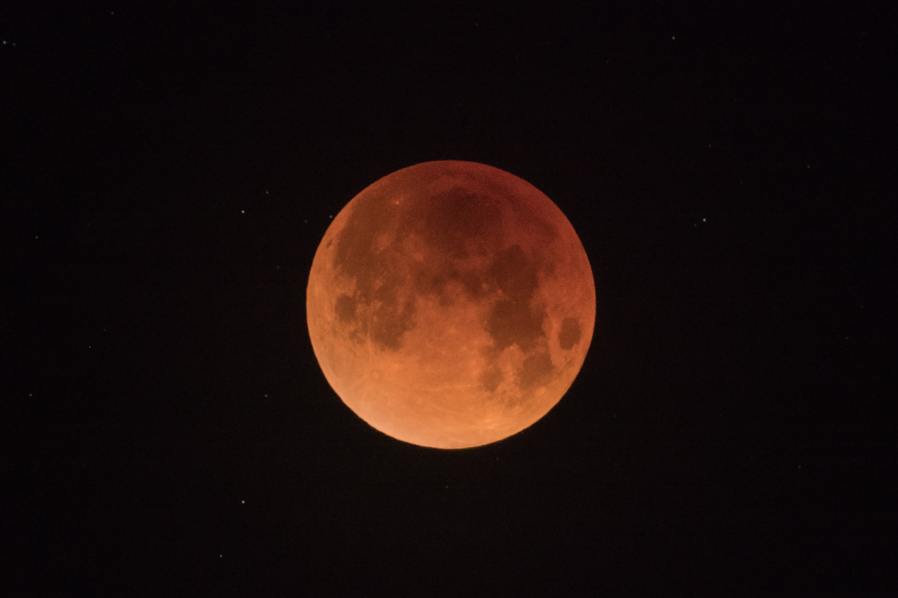

Mars je četvrti planet po udaljenosti od Sunca, vidljiv sa Zemlje prostim okom i zato poznat od davnine.
Mars, četvrti planet po udaljenosti od Sunca. Vidljiv je sa Zemlje golim okom i zato poznat od davnine. Nazvan je po Marsu, bogu u rimskoj mitologiji. Ima dva satelita: Deimos i Phobos.
Areosinkrone orbite (ASO) su sinkrone orbite za umjetne satelite oko Marsa. One su Marsov ekvivalent geosinkronih putanja (GSO) oko Zemlje. Prefiks areo- proizlazi iz Ares, drevni grčki bog rata i pandan rimskom bogu Marsu, s kojim je identificiran planet. Moderna grčka riječ za Mars je Άρης (Aris). Kao i kod svih sinkronih orbita, i areosinkrona ima orbitalno razdoblje duljine jednako duljini primarnog sideričkog dana. Satelit u areosinkronoj orbiti ne mora nužno održavati fiksni položaj na nebu kako ga vidi promatrač na površini Marsa; međutim, takav će se satelit vraćati u isti prividni položaj svakog marsovskog dana. Nadmorska visina potrebna za održavanje areosinkrone orbite iznosi približno 17.000 kilometara. Kad bi se satelit u areosinkronoj orbiti koristio kao komunikacijska relejna veza, "imao bi komunikacijski domet od 17.000 to 20.000 kilometara" do različitih točaka na vidljivoj marsovskoj površini.[ Areosinkrona orbita koja je ekvatorska (u istoj ravnini kao ekvatora Marsa), kružna, a progradna (tijelo se rotira oko Marsove osi u istom smjeru kao i površina planeta) je poznat kao areostacionarna orbita (AEO). Promatraču na površini Marsa čini se da je položaj satelita u AEO-u fiksiran u stalnom položaju na nebu. AEO je analogan geostacionarnoj orbiti (GEO) oko Zemlje.
Promjer mu je 6 794 km, masa 0,107 Zemljine mase, srednja gustoća 3,94 ∙ 103 kg/m3, a površinsko ubrzanje sile teže 0,38 ubrzanja sile teže na Zemlji. Ima dva pratioca nepravilna oblika, Deimos (11 km × 12 km × 15 km) i Phobos (19 km × 22 km × 27 km). Sunčev mu dan traje gotovo kao i Zemljin, 24 h i 37 min. Oko Sunca obiđe za 687 zemaljskih dana, od Sunca je prosječno udaljen 228 milijuna km, a zbog nagiba osi vrtnje prema ravnini staze od 25°12′ i izduljenosti staze, pokazuje godišnja doba
Mars ima primjetno izduženu planetarnu putanju (ekscentricitet 0,093), pa mu se udaljenost od Sunca znatno mijenja tijekom Marsove godine, što bitno utječe na klimu. Marsov siderički period revolucije (zvjezdana godina) traje 687 dana, a period rotacija (siderički dan) 24 h 37 min 23 s. Os rotacije nagnuta je, slično kao i kod Zemlje, 25° prema ravnini revolucije.
Satelite Fobos (Strah) i Deimos (Užas) otkrio je Asaph Hall 1877. Fobos je bliži i oko Marsa obiđe za 7 sati i 39 minuta, stoga brže obiđe Mars nego što se sam Mars obrne. Zato on izlazi Marsu na zapadnom obzoru! Oba satelita okreću Marsu uvijek jednu stranu. Oko njega gibaju se gotovo kružnim stazama, u ravnini njegova ekvatora. Prema snimkama iz svemirskih letjelica, Fobos je nepravilna gromada dimenzija 27 km x 21 km x 19 km, a po sebi nosi mnogobrojne kratere i usporedne jarke. Deimos je manji, a jednako nepravilan, s dimenzijama 15 km x 12 km x 11 km, i također je izrovan kraterima. Tlo i manji krateri gotovo su mu izgubljeni pod slojem prašine. Sateliti imaju mali albedo, 0,5. Po svojstvima ta dva mjeseca ulaze u red planetoida.